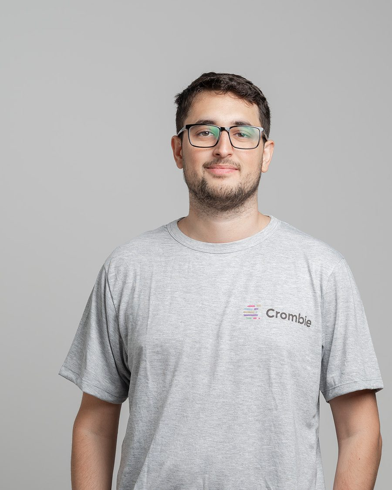
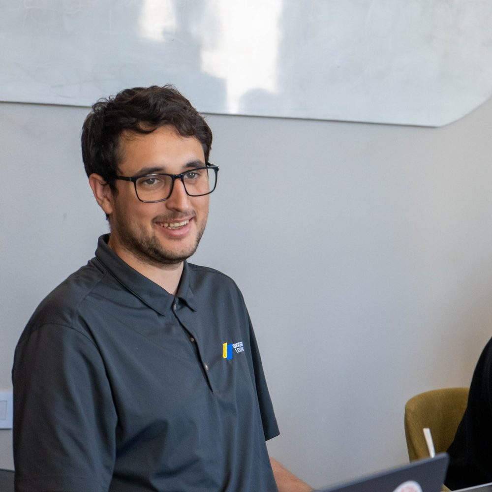

Lidero equiposI lead teams
Que el equipo esté bien, que el cliente sepa qué pasa y que el código llegue a producción. En ese orden.
The team is doing well, the client knows what's going on, and the code reaches production. In that order.
Santa Fe, Argentina
Lidera equipos, construye productos en AWS y enseña a programar.
Leads teams, builds products on AWS and teaches people to code.
Tech Lead en Crombie desde 2023. Fundador de Seguridar. Director de las dos primeras ediciones de la Escuelita. Y, todavía, alguien que se sienta a programar todos los días.
Tech Lead at Crombie since 2023. Founder of Seguridar. Director of the first two editions of Escuelita. And, still, someone who sits down to code every day.

Entré a Crombie en 2021 para programar. A los dos años me dieron un equipo, y desde entonces lideré cinco proyectos para clientes de Estados Unidos y Argentina: fintech, logística, eventos, IoT. En paralelo dirigí la Escuelita, donde formamos a gente sin experiencia y la metimos en proyectos reales.
I joined Crombie in 2021 to write code. Two years later they gave me a team, and since then I've led five projects for clients in the US and Argentina: fintech, logistics, events, IoT. Alongside that I directed Escuelita, where we trained people with no experience and put them on real projects.
Hoy sigo en Crombie, en el backend de NFTYDoor, y a la noche construyo lo mío: Seguridar, una herramienta para que los padres se enteren a tiempo de los riesgos online de sus hijos. Creo que una persona con buenas herramientas hoy hace lo que antes hacían cinco, y me gusta ser esa persona.
Today I'm still at Crombie, on NFTYDoor's backend, and at night I build my own thing: Seguridar, a tool that lets parents find out in time about their kids' online risks. I believe one person with good tools now does what five used to, and I like being that person.
Que el equipo esté bien, que el cliente sepa qué pasa y que el código llegue a producción. En ese orden.
The team is doing well, the client knows what's going on, and the code reaches production. In that order.
Serverless en AWS, Terraform o SST, TypeScript o Python. De la idea al dominio en producción, con factura chica.
Serverless on AWS, Terraform or SST, TypeScript or Python. From idea to live domain, on a small bill.
Dos ediciones de la Escuelita, clases de recuperación, feedback de entregables. Ver a alguien entrar a la industria es lo mejor del trabajo.
Two editions of Escuelita, catch-up classes, feedback on deliverables. Watching someone enter the industry is the best part of the job.
De developer a Tech Lead a fundador, en cinco años. Deslizá →
From developer to Tech Lead to founder, in five years. Scroll →
Entro como Full Stack. Eventos para la provincia de Buenos Aires. Primer indicio de que me gusta ordenar, no solo programar.
I join as Full Stack. Events for the province of Buenos Aires. First sign that I like organising, not just coding.
Arranca la incubadora. La dirijo en paralelo al trabajo.
The incubator kicks off. I direct it alongside my job.
Primera vez con AWS Serverless. Termino liderando el backend de una fintech hipotecaria de EE.UU.
First time with AWS Serverless. I end up leading the backend of a US mortgage fintech.
Mi primer equipo: cinco personas, un proyecto IoT con IA en problemas. Lo estabilizamos.
My first team: five people, a struggling AI-IoT project. We stabilised it.
Una red social y una plataforma de eventos. Primer proyecto en inglés; armo Scrum, entornos y deploys desde cero.
A social network and an events platform. First project in English; I set up Scrum, environments and deploys from scratch.
Logística sobre un sistema legacy, llave en mano, con fecha. Apps en las tiendas y salida a producción.
Logistics on a legacy system, turnkey, with a deadline. Apps in the stores and a production launch.
Vuelvo a NFTYDoor para liderar 12 personas. Freno la rotación, separo la infra, migro a SST.
Back at NFTYDoor to lead 12 people. I stop the turnover, split the infra, migrate to SST.
Developer – Associate y Cloud Practitioner.
Developer – Associate and Cloud Practitioner.
Empiezo mi producto: agentes, motor de visión, API, infra. Todo solo, de noche.
I start my product: agents, vision engine, API, infra. All on my own, at night.
Arranco la Facultad de Ingeniería a distancia. Y sigo con inglés en la UTN.
I start at the Faculty of Engineering remotely. And keep up English at UTN.
Identidad, crédito y co-prestatarios de día. Seguridar, IA-Trader y demos para empresas de noche.
Identity, credit and co-borrowers by day. Seguridar, IA-Trader and business demos by night.

Casi ningún proyecto me llegó en condiciones ideales: equipos con rotación, sistemas legacy, clientes que nadie conocía, plazos imposibles. Aprendí que un Tech Lead sirve para tres cosas.
Almost no project came to me under ideal conditions: teams with turnover, legacy systems, clients nobody had met, impossible deadlines. I learned a Tech Lead is there for three things.
Uno a uno, feedback, dar protagonismo. Y decisiones difíciles cuando alguien ya no suma, o cuando están por sacar a alguien que sí.
One-on-ones, feedback, giving people the spotlight. And hard calls when someone no longer adds value, or when they're about to remove someone who does.
Entornos donde ver cada entrega, sprints medibles, reuniones donde se muestra, se escucha y se planifica. En inglés si hace falta.
Environments to see every delivery, measurable sprints, meetings to show, listen and plan. In English if needed.
Reviews, deploys automáticos, infraestructura que no asusta. Y cuando falta, me siento a programar.
Reviews, automated deploys, infrastructure that doesn't scare anyone. And when something's missing, I sit down and code it.
NFTYSOLAR · 2024 – hoytoday · equipo de 12team of 12
Llegué a un equipo con rotación altísima que compartía código e infraestructura con el producto principal. Primero la gente: feedback uno a uno, rutinas de comunicación con el cliente, pasar de "piden y hacemos" a sprints. Después la técnica: separé el repositorio y la infraestructura, planifiqué las migraciones y las ejecutamos sin frenar el producto, sobre AWS Serverless con SST y con menos costo. Dos años después sigo ahí, en los flujos más sensibles del producto principal.
I arrived at a team with sky-high turnover that shared code and infrastructure with the main product. People first: one-on-one feedback, communication routines with the client, moving from "they ask, we do" to sprints. Then the engineering: I split the repository and infrastructure, planned the migrations and ran them without stopping the product, on AWS Serverless with SST and at lower cost. Two years later I'm still there, on the main product's most sensitive flows.
2021 – 2023 · Crombie · Santa Fe
Buscamos gente con ganas y sin experiencia, le enseñamos los frameworks que usa la industria y la sumamos a proyectos reales. Dirigí las dos primeras ediciones. De todo lo que hice en Crombie, es lo que más orgullo me da.
We look for motivated people with no experience, teach them the frameworks the industry uses and bring them into real projects. I directed the first two editions. Of everything I've done at Crombie, it's what I'm proudest of.
Qué es la Escuelita ↗What Escuelita is ↗ Cierre edición 1 ↗Edition 1 wrap-up ↗ Cierre edición 2 ↗Edition 2 wrap-up ↗ Material de clases ↗Class material ↗
Fuera del trabajo. Todo en AWS, todo hecho solo, todo con factura chica.
Outside work. All on AWS, all built alone, all on a small bill.
Producto propio · desde 2025Own product · since 2025
Para que un padre se entere a tiempo si su hijo se está metiendo en apuestas online u otros riesgos, sin revisarle el celular.
So a parent finds out in time if their kid is getting into online betting or other risks, without going through their phone.
Lo contrario del control parental clásico: respeta la autonomía del chico y avisa solo cuando aparece una señal, para hablar antes de que el problema crezca. Agentes para Windows y Android, un motor de visión con CLIP, API en NestJS con suscripciones, panel de padres en Next.js, todo en AWS con Terraform. Y lo que no es código: privacidad, consentimiento, inscripción en el Registro Nacional de Bases de Datos, y salir a buscar a quien lo necesita.
The opposite of classic parental control: it respects the kid's autonomy and only alerts when a signal appears, so the conversation happens before the problem grows. Windows and Android agents, a CLIP vision engine, a NestJS API with subscriptions, a Next.js parent dashboard, all on AWS with Terraform. Plus the non-code part: privacy, consent, registration with Argentina's National Database Registry, and going out to find who needs it.
Sitio en producciónLive site
El sitio del emprendimiento de mi mamá, rehecho de cero este año: agenda con inscripción online, turnos según disponibilidad, panel de administración y SEO para Argentina. Next.js 16 sobre AWS con SST, casi todo en capa gratuita.
My mother's practice website, rebuilt from scratch this year: calendar with online sign-up, availability-based appointments, admin panel and SEO for Argentina. Next.js 16 on AWS with SST, almost all in the free tier.
terapia-constelacion-familiar.com ↗Mini proyectoMini project
Un bot que simula si "comprar las caídas" del S&P 500 rinde, con créditos virtuales: seis carteras compitiendo contra SPY, backtest desde 2007, Lambdas cada 5 minutos en horario de mercado. Menos de 1 USD por mes.
A bot that simulates whether "buying the dip" on the S&P 500 pays off, with virtual credits: six portfolios competing against SPY, backtest since 2007, Lambdas every 5 minutes during market hours. Under 1 USD a month.
Software a medidaCustom software
Llego a la reunión con algo que ya anda: conciliación de facturación para clínicas, partes de obra que se vuelven certificados, lectura de medidores por foto. Procesan archivos reales en el navegador; el resto se construye en un piloto.
I show up to the meeting with something that already works: billing reconciliation for clinics, site reports that become certificates, meter reading from a photo. They process real files in the browser; the rest gets built in a pilot.

Un equipo que necesita orden, un producto que querés construir o simplemente un café virtual. Abierto a roles de Tech Lead, Senior Full Stack o DevOps (remoto) y a software a medida.
A team that needs some order, a product you want to build, or just a virtual coffee. Open to Tech Lead, Senior Full Stack or DevOps roles (remote) and custom software work.
giulianoantonanzas@gmail.com